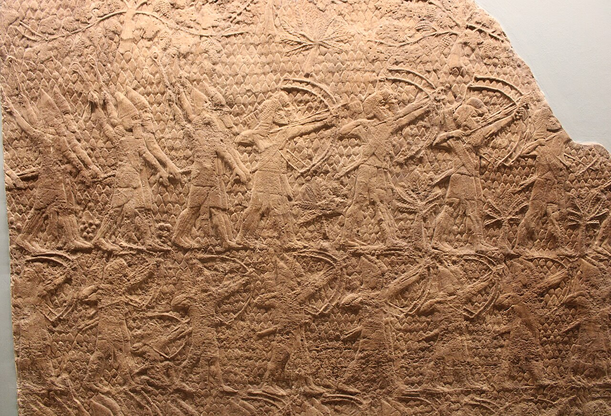
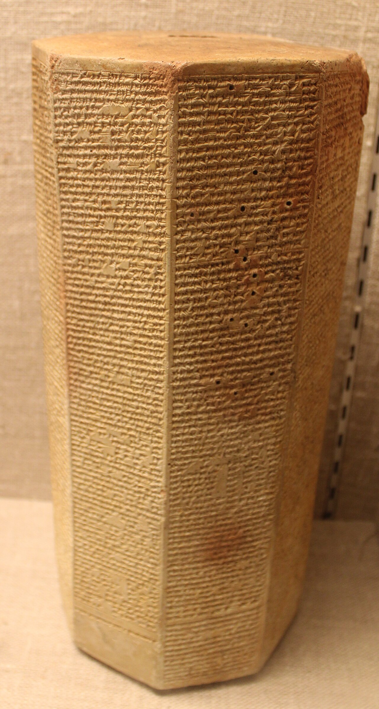
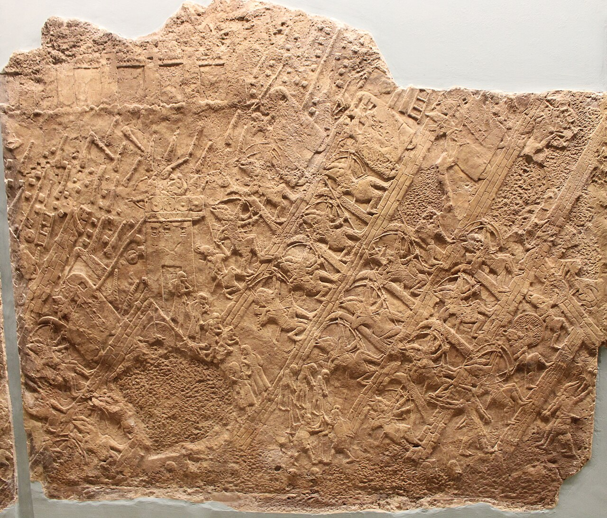

1. O mundo de Isaías: quando a segurança desmorona
Uma crise no reino de Judá
Isaías 33 pertence a um livro que reúne poesia, oráculos e tradições formadas em mais de um momento. O profeta Isaías é associado ao século VIII a.C., quando a expansão assíria pressionava os pequenos reinos da região. Judá, com Jerusalém como capital, enfrentava decisões difíceis: resistir, negociar, pagar tributos ou buscar alianças.
O capítulo evoca uma cidade ameaçada, o rompimento de acordos, a devastação da terra e o medo da população. Por isso, muitos intérpretes o relacionam às crises assírias do fim do século VIII a.C., especialmente ao período de Senaqueribe e Ezequias, por volta de 701 a.C. Essa relação é plausível, mas não significa que cada verso possa ser datado com precisão ou reduzido a um único acontecimento. A composição do capítulo e sua história editorial permanecem discutidas.
Os relevos assírios sobre o cerco de Laquis e os anais reais de Senaqueribe documentam a força militar e a propaganda imperial. A tradição bíblica também relata a campanha e a ameaça a Jerusalém. As fontes têm propósitos distintos: os registros régios celebram o poder do rei; os textos bíblicos interpretam os fatos teologicamente. Lê-los lado a lado ajuda a perceber tanto a realidade política quanto a disputa sobre o significado da crise.


O que significava estar seguro?
Para uma sociedade antiga, segurança dependia de elementos concretos: alimento, água, muralhas, liderança, estabilidade das rotas, proteção militar e continuidade da comunidade. Também havia uma dimensão religiosa: a sorte coletiva era interpretada em relação à aliança e à justiça de Deus. A ameaça externa podia, portanto, parecer ao mesmo tempo militar, econômica, social e espiritual.
Jerusalém não era apenas um conjunto de edifícios. Era centro político e religioso, lugar de memória e sinal de identidade. A possibilidade de sua queda colocava em risco a forma como o povo entendia seu futuro.
2. O capítulo em seus blocos
Versículos 1–6 — O explorador, a oração e a estabilidade
O capítulo começa denunciando aquele que saqueia sem ser saqueado e age com traição. Quando termina de devastar, também será alcançado pelo julgamento. A fala muda para uma súplica: “Sê o nosso braço a cada manhã” (v. 2, em traduções comuns). A imagem do braço representa força e auxílio. Em seguida, o texto anuncia que Deus será exaltado e que haverá abundância de salvação, sabedoria e conhecimento.
Teologicamente: a segurança duradoura não está garantida pela supremacia militar do império; o texto a vincula à justiça e à fidelidade de Deus. Humanamente: a oração surge no meio da crise, e não como prova de que a crise desapareceu. O capítulo não promete controle total das circunstâncias.
Versículos 7–12 — Lamento, tratado quebrado e devastação

Mensageiros choram, caminhos ficam vazios e um acordo é desprezado. A terra seca e o Líbano perde seu vigor. A linguagem transforma a ruptura política em desordem de toda a criação. Então aparece a declaração divina: “Agora me levantarei”. A ameaça será como palha consumida pelo fogo.
A poesia não é um relatório neutro de guerra: ela interpreta a violência e anuncia inversão de poder. Para quem vivia a insegurança, o texto dá voz ao lamento e afirma que a brutalidade imperial não é eterna nem moralmente incontestável.
Versículos 13–16 — Quem pode viver diante do fogo?
Os ouvintes são chamados a considerar os atos de Deus. Os habitantes de Sião perguntam quem sobreviverá ao fogo devorador. A resposta descreve uma pessoa que pratica justiça, fala com retidão, rejeita o ganho obtido por opressão, não aceita suborno, não participa de planos violentos e fecha os olhos ao mal.
O trecho não define segurança por riqueza ou força. Liga a possibilidade de habitar com Deus a uma conduta ética concreta: justiça, honestidade, recusa à corrupção e cuidado com aquilo que se consente em ver. A imagem do fogo pode representar julgamento e santidade; não é uma fórmula para classificar pessoas em sofrimento como culpadas.
Versículos 17–24 — Visão, memória do terror e Sião restaurada
O povo verá o rei em sua beleza e contemplará uma terra ampla. A memória dos cobradores e dos invasores — com seus registros, torres e línguas incompreensíveis — é evocada para então ser superada. Sião aparece como lugar de festas, estabilidade e perdão. Deus é apresentado como juiz, legislador e rei; por isso, ele salva. A imagem de um navio cujas cordas estão frouxas (v. 23) sugere a impotência do poder hostil. O capítulo conclui com a promessa de que o povo será perdoado e que o enfermo não dirá: “Estou doente” (v. 24).
Essa linguagem de restauração expressa esperança comunitária em meio à ameaça. Ela não deve ser transformada numa promessa individual de que todo problema de saúde será removido. No horizonte do poema, restauração, perdão, segurança coletiva e vida renovada estão entrelaçados.
3. Versículos em destaque
Isaías 33:6 — Sabedoria e estabilidade
“Ele será a estabilidade dos teus tempos, abundância de salvação, sabedoria e conhecimento; o temor do Senhor será o seu tesouro.” (tradução pode variar)
O texto: apresenta Deus como fundamento de estabilidade em tempos ameaçados e associa essa estabilidade à salvação, sabedoria e conhecimento. “Temor do Senhor” é reverência e reconhecimento de Deus, não simplesmente pânico.
Reflexão: informação e inteligência podem ajudar a resolver problemas, mas não escolhem por nós o que é justo. Sabedoria inclui discernimento sobre como usar o conhecimento, especialmente quando poder e medo pressionam as decisões.
Isaías 33:14–16 — Integridade em vez de aparência
A resposta sobre quem pode habitar com o fogo divino é ética. O poema menciona atos, palavras, dinheiro, violência e atenção moral. Não basta parecer religioso ou declarar bons valores; a vida cotidiana é o lugar onde a integridade se torna visível.
A lista não é um diagnóstico de quem “merece” sofrer. É um retrato ideal de conduta fiel e justa, em contraste com a exploração e a corrupção descritas no próprio capítulo.
Isaías 33:17 — Ver o rei e uma terra ampla
A promessa de ver o rei em sua beleza e contemplar um horizonte amplo contrasta com a visão estreita imposta pelo cerco. A esperança bíblica aqui é coletiva e política: voltar a imaginar futuro quando a ameaça faz o mundo parecer fechado.
Isaías 33:22 — Justiça, lei e governo
“Porque o Senhor é o nosso juiz, o Senhor é o nosso legislador, o Senhor é o nosso rei; ele nos salvará.”
O verso reúne funções de julgamento, legislação e realeza. No contexto teológico, a autoridade última pertence a Deus. O poema fala a uma comunidade cuja liderança e instituições estavam sob pressão; afirma que justiça e governo não podem ser separados da responsabilidade moral.
Isaías 33:24 — Perdão e restauração
O encerramento junta cura e perdão, sinalizando uma comunidade restaurada. É linguagem de esperança coletiva. Aplicá-la com cuidado significa acolher a esperança sem culpar quem continua doente, nem prometer cura física automática.
4. Medo, poder e comportamento humano
O medo é informação, não ordem absoluta
O medo pode detectar perigo e preparar o corpo para agir. Em situações reais, escutá-lo pode ser prudente. Mas o medo também pode ampliar ameaças, antecipar cenários e estreitar a atenção. Uma reação útil é perguntar: “O que está acontecendo de fato? O que estou prevendo? Qual passo cuidadoso está ao meu alcance?”
Isaías 33 não faz psicologia clínica. A analogia contemporânea é que uma comunidade ameaçada pode procurar segurança em força, acordos ou riqueza, enquanto o texto convida a examinar também justiça, confiança e limites do poder.
Controle e vulnerabilidade
O capítulo reconhece que estruturas externas importam: tratados são rompidos, rotas ficam perigosas e cidades podem ser cercadas. Não é uma mensagem de que basta mudar a atitude interior. Ao mesmo tempo, denuncia a ilusão de que a força de quem saqueia será permanente. A reflexão prática é distinguir o que podemos preparar ou reparar daquilo que não está sob nosso comando.
Justiça como hábito observável
O retrato dos versículos 15–16 desloca a atenção da imagem pública para ações verificáveis. Em linguagem atual: tratar pessoas com honestidade, recusar vantagens injustas, não usar o poder para intimidar e não ignorar deliberadamente o dano. O texto põe a espiritualidade em contato com o comportamento social.
Limites da leitura psicológica
Termos como defesa, evitação, culpa ou necessidade de controle podem iluminar experiências modernas, mas não são categorias usadas pelo autor antigo. Freud, Jung, Winnicott, a terapia cognitivo-comportamental e a terapia de aceitação e compromisso pertencem a contextos diferentes. O capítulo pode iniciar perguntas; não permite diagnosticar um leitor ou uma sociedade.
5. Diálogo com a filosofia
Ética das virtudes: a ênfase em justiça e retidão aproxima-se, por analogia, da pergunta aristotélica sobre como hábitos formam o caráter. A diferença é decisiva: Aristóteles desenvolve uma ética filosófica própria; Isaías fala dentro da aliança de Israel e da soberania de Deus.
Estoicismo: a distinção entre o que depende de nós e o que não depende pode ajudar a pensar limites do controle. Mas o texto bíblico não é estoico: sua esperança se funda na ação e fidelidade de Deus, e não apenas no domínio racional de si.
Existencialismo: a ameaça expõe escolhas e responsabilidades. Ainda assim, não se deve projetar Kierkegaard ou filósofos modernos sobre o sentido original. Eles servem como interlocutores posteriores, não como fontes do capítulo.
O diálogo é produtivo quando as diferenças permanecem nítidas: filosofia pergunta como viver; Isaías articula uma interpretação religiosa e comunitária da história, da justiça e da esperança.
6. O espelho contemporâneo: o que muda e o que permanece
| Tema | Horizonte de Isaías 33 | Pergunta para hoje |
|---|---|---|
| Poder | Império, tributo, guerra e acordos | Como instituições e recursos concentram influência? |
| Segurança | Muralhas, alianças, alimento e proteção divina | Quais redes de apoio e condições concretas sustentam a vida? |
| Justiça | Retidão, recusa ao suborno e rejeição da violência | O que nossas escolhas cotidianas fazem com quem tem menos poder? |
| Esperança | Sião restaurada e libertação comunitária | Como manter um futuro imaginável e trabalhar por ele? |
Hoje dispomos de ciência, saúde pública, comunicações e instituições que não existiam no mundo antigo. Essas mudanças são reais. Porém, avanços técnicos não garantem automaticamente justiça, maturidade ou paz. O paralelo responsável é reconhecer questões humanas recorrentes — vulnerabilidade, desejo de poder, confiança, medo — sem afirmar que as épocas são iguais.
7. Cinco princípios para praticar
- Buscar estabilidade em valores, não apenas em circunstâncias. O capítulo associa estabilidade à sabedoria e à reverência. Prática: antes de uma decisão difícil, escreva qual valor quer preservar. Risco: usar “valores” para ignorar condições materiais ou conselho sensato.
- Nomear a ameaça com precisão. O poema não esconde o perigo. Prática: separar fatos, previsões e possibilidades. Risco: transformar a reflexão em ruminação sem ação.
- Fazer da integridade algo observável. A justiça aparece em palavras e atos. Prática: escolher uma ação concreta de honestidade ou reparação. Risco: exigir perfeição moral de si e dos outros.
- Recusar a lógica de que poder dá razão. O opressor também será julgado. Prática: considerar quem arca com o custo de uma decisão. Risco: confundir firmeza ética com hostilidade indiscriminada.
- Manter aberta a possibilidade de restauração. A cidade ameaçada ainda pode imaginar um futuro. Prática: identificar uma ajuda concreta a pedir ou oferecer. Risco: tratar esperança como garantia de resultado rápido.
8. Perguntas para reflexão
- Em que área da vida a busca por segurança pode estar fazendo você tolerar algo que considera injusto?
- Que diferença há entre agir com prudência e tentar controlar tudo?
- Qual pequeno ato desta semana demonstraria, de forma visível, o valor que você diz querer seguir?
Síntese: Isaías 33 não apresenta uma sociedade sem medo; imagina uma comunidade que atravessa a ameaça medindo poder pela justiça, buscando sabedoria e mantendo viva a esperança de restauração.
9. Notas e referências
Leitura baseada no texto de Isaías 33 em traduções bíblicas correntes. Para estudo aprofundado, consulte introduções acadêmicas ao livro de Isaías, comentários histórico-críticos e materiais de museus sobre a campanha de Senaqueribe e os relevos de Laquis. Datas e identificação do contexto são aproximações discutidas por estudiosos. As citações bíblicas foram apresentadas em tradução de sentido; a redação varia entre versões.
Este estudo é uma interpretação reflexiva. Tradições judaicas e cristãs podem enfatizar aspectos distintos; nenhuma aplicação pessoal aqui pretende esgotar o significado do texto.